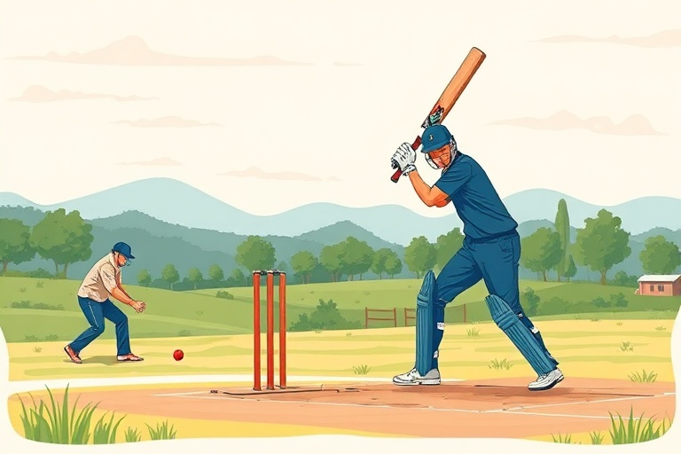

ক্রিকেটের সহজ পাঠ: নতুনদের জন্য নিয়মাবলী এবং খেলার কৌশল
Category: cricket | Language: bn
ভারতে ক্রিকেট কেবল একটি খেলা নয়, এটি একটি আবেগ। আপনি যদি টিভিতে খেলা দেখে উদ্বুদ্ধ হয়ে নিজে মাঠে নামতে চান, তবে এই নির্দেশিকাটি আপনার জন্য। ক্রিকেটের নিয়মকানুন প্রথম দিকে কিছুটা জটিল মনে হতে পারে, কিন্তু একবার মূল বিষয়গুলো বুঝে নিলে এটি অত্যন্ত আনন্দদায়ক একটি খেলা। এই নিবন্ধে আমরা ক্রিকেটের মৌলিক নিয়ম থেকে শুরু করে ব্যাটিং ও বোলিংয়ের প্রাথমিক কৌশলগুলো সহজভাবে আলোচনা করব যাতে একজন নতুন খেলোয়াড় হিসেবে আপনার যাত্রা সহজ হয়। এটি মূলত সেই সব নতুনদের সাহায্য করবে যারা পাড়ার মাঠে বা স্থানীয় ক্লাবে খেলা শুরু করতে চাইছেন।
ক্রিকেটের মূল ভিত্তি হলো ১১ জনের দুটি দল। খেলার প্রধান লক্ষ্য হলো বিপক্ষ দলের চেয়ে বেশি রান করা। সাধারণত তিনটি প্রধান ফরম্যাটে আন্তর্জাতিক খেলা হয়: টেস্ট (৫ দিন), ওয়ানডে (৫০ ওভার) এবং টি-টোয়েন্টি (২০ ওভার)। পিচের দুই প্রান্তে তিনটি করে স্টাম্প থাকে এবং ব্যাটসম্যানকে সেই স্টাম্প রক্ষা করার পাশাপাশি রান সংগ্রহ করতে হয়। বোলার বল করেন স্টাম্প লক্ষ্য করে বা ব্যাটসম্যানকে আউট করার উদ্দেশ্যে। যদি বল স্টাম্পে লাগে, বা ব্যাটসম্যানের মারা ক্যাচ কোনো ফিল্ডার লুফে নেন, তবে ব্যাটসম্যান আউট বলে গণ্য হন।
ব্যাটিংয়ের প্রথম ধাপ হলো সঠিক 'গ্রিপ' বা ব্যাট ধরা। আপনার দুই হাতের বৃদ্ধাঙ্গুলি এবং তর্জনী দিয়ে ব্যাটের হাতলে একটি 'V' আকৃতি তৈরি করুন। আপনার দাঁড়ানোর ভঙ্গি বা 'স্ট্যান্স' হতে হবে আরামদায়ক; দুই পা কাঁধের সমান দূরত্বে রেখে সামান্য হাঁটু ভাঁজ করে দাঁড়ান। বলের দিকে নজর রাখা এবং বলের মেরিট অনুযায়ী শট নির্বাচন করাই হলো একজন দক্ষ ব্যাটসম্যানের লক্ষণ। শুরুতে 'ডিফেন্সিভ শট' এবং 'স্ট্রেইট ড্রাইভ' অনুশীলন করা সবচেয়ে ভালো, কারণ এতে ব্যাটের মাঝখানে বল লাগানোর দক্ষতা বাড়ে।
বোলিংয়ের ক্ষেত্রে প্রধানত দুই ধরণের শৈলী দেখা যায়— পেস এবং স্পিন। পেস বোলাররা গতির ওপর নির্ভর করেন, আর স্পিনাররা বলের ঘূর্ণন ব্যবহার করে ব্যাটসম্যানকে বিভ্রান্ত করেন। মনে রাখবেন, বোলিং করার সময় আপনার হাত যেন কনুই থেকে সোজা থাকে, না হলে সেটি 'নো-বল' হিসেবে গণ্য হবে। বল করার সময় 'লাইন' (বলটি কোন দিকে যাচ্ছে) এবং 'লেংথ' (বলটি পিচের কোথায় ড্রপ করছে) নিয়ন্ত্রণ করা শিখলে আপনি দ্রুত উইকেট পেতে পারেন। নতুনদের জন্য গুড লেংথ-এ বল করার চেষ্টা করা সবচেয়ে কার্যকর কৌশল।
ফিল্ডিং হলো ক্রিকেটের এক অবিচ্ছেদ্য অংশ যা ম্যাচের মোড় ঘুরিয়ে দিতে পারে। স্লিপ, কভার, মিড-অন বা স্কোয়ার লেগের মতো বিভিন্ন পজিশনে ফিল্ডাররা থাকেন। একজন ভালো ফিল্ডার হতে হলে আপনাকে সবসময় বলের দিকে সজাগ দৃষ্টি রাখতে হবে এবং বল ধরার পর দ্রুত উইকেটকিপার বা বোলারের দিকে থ্রো করতে হবে। ক্যাচ ধরার সময় হাতের তালু নরম রাখা এবং বলের গতিপথ অনুসরণ করা অত্যন্ত জরুরি। ভালো ফিল্ডিং কেবল রান বাঁচায় না, বরং বোলারকে আত্মবিশ্বাস জোগায় এবং বিপক্ষ দলের ওপর চাপ সৃষ্টি করে।
একটি বাস্তব উদাহরণ দিয়ে বিষয়টি বোঝা যাক। ধরুন, আপনি একটি টি-টোয়েন্টি ম্যাচ খেলছেন এবং বোলার একটি 'নো-বল' (পপিং ক্রিজ অতিক্রম করা) করলেন। এর ফলে পরবর্তী বলটি হবে 'ফ্রি হিট'। এই পরিস্থিতিতে ব্যাটসম্যান ক্যাচ আউট হলেও তাকে মাঠ ছাড়তে হয় না (যদি না তিনি রান আউট হন)। এই ধরণের সুযোগে ব্যাটসম্যানরা সাধারণত বড় শট খেলার চেষ্টা করেন। এই ছোট ছোট নিয়মগুলো জানলে আপনি খেলার পরিস্থিতির ওপর ভিত্তি করে নিজের কৌশল আরও ভালোভাবে সাজাতে পারবেন এবং দলের জয়ে অবদান রাখতে পারবেন।
নতুন খেলোয়াড়রা প্রায়ই কিছু সাধারণ ভুল করেন, যেমন বলের দিকে শেষ পর্যন্ত না তাকিয়ে আগেই শট খেলার চেষ্টা করা। এছাড়া রান নেওয়ার সময় ক্রিজের ভেতরে ব্যাট না রাখা বা ভুল সময়ে ক্রিজ ছাড়া 'রান আউট' হওয়ার ঝুঁকি বাড়িয়ে দেয়। এই ভুলগুলো এড়াতে নেটে অনুশীলনের সময় একজন বন্ধুর সাহায্য নিন যে আপনার নড়াচড়া পর্যবেক্ষণ করবে। সবসময় মনে রাখবেন, শক্তিতে নয় বরং টাইমিংয়ের ওপর জোর দিলে বল বেশি দূরে যায়। তাড়াহুড়ো না করে বলের গতির সাথে তাল মেলানোই সাফল্যের আসল চাবিকাঠি।
ক্রিকেটে নিরাপত্তার বিষয়টি এড়িয়ে যাওয়া যায় না, বিশেষ করে যখন আপনি শক্ত লেদার বলে খেলছেন। হেলমেট, প্যাড, গ্লাভস এবং অ্যাবডমিনাল গার্ড (এল-গার্ড) পরা বাধ্যতামূলক। সঠিক মাপের স্পাইক জুতো নির্বাচন করাও জরুরি যাতে দৌড়ানোর সময় বা বল করার সময় পা পিছলে চোট না লাগে। সরঞ্জাম কেনার সময় গুণমানের দিকে নজর দিন, কারণ এটি কেবল আপনার পারফরম্যান্স নয়, আপনার সুরক্ষা নিশ্চিত করে। টেনিস বলে খেলার সময় ঝুঁকি কম থাকলেও চোখের সুরক্ষা এবং সঠিক জুতো পরা সবসময়ই বুদ্ধিমানের কাজ।
ক্রিকেটে দক্ষতা অর্জনের জন্য ধৈর্য এবং নিয়মিত অনুশীলনের কোনো বিকল্প নেই। আপনার পরবর্তী পদক্ষেপ হতে পারে স্থানীয় কোনো ক্রিকেট একাডেমিতে ভর্তি হওয়া বা বন্ধুদের সাথে নিয়মিত মাঠে গিয়ে নেট প্র্যাকটিস শুরু করা। প্রতিদিন অন্তত ৩০ মিনিট ব্যাটিং শ্যাডো ড্রিল বা বোলিং রান-আপ অনুশীলন করুন। ছোট ছোট লক্ষ্য স্থির করুন, যেমন টানা ছয়টি বল সঠিক জায়গায় করা বা উইকেটের মাঝে দৌড়ানোর গতি বাড়ানো। এই ধারাবাহিকতাই আপনাকে একজন সাধারণ দর্শক থেকে একজন আত্মবিশ্বাসী ক্রিকেটারে রূপান্তরিত করবে।